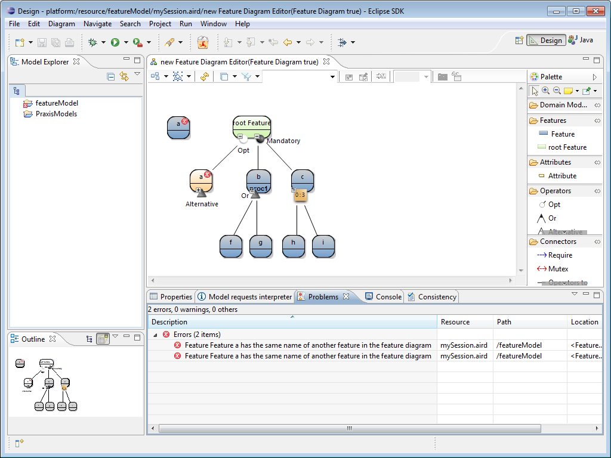

If you have installed the OCL constraints, you need to check before if the constraints are enabled going on Window-> Preferences -> Model Validation -> Constraints as in the following figure :
All constraints should be checked. Then, click on the graphical feature diagram and go the the Eclipse menu bar -> Diagram -> Validate. You obtain a red decorator on the error as in nthe following figure :

The two first errors in the Problem view are for the OCL constraiints and the third is the error detected by Praxis.